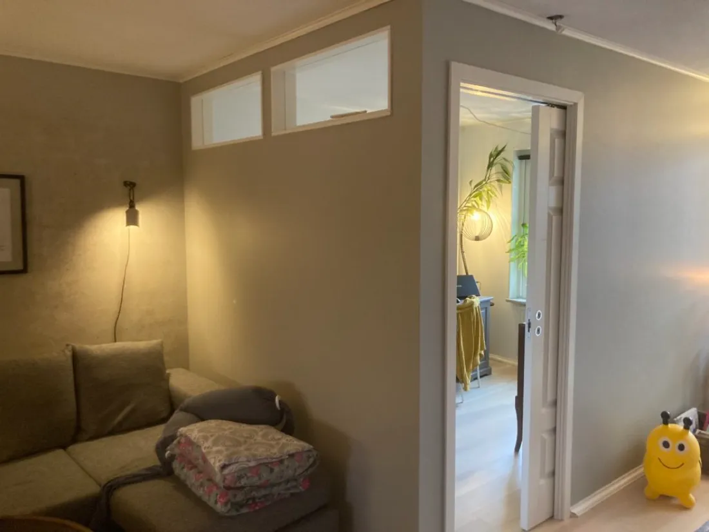
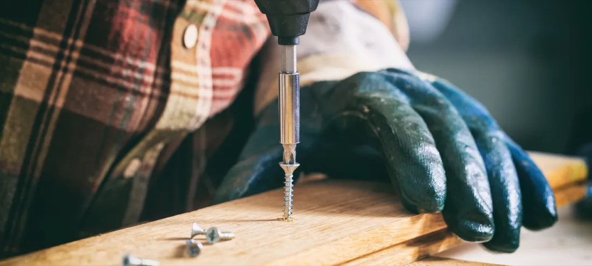
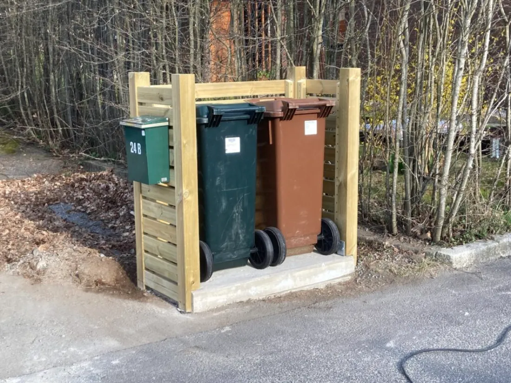
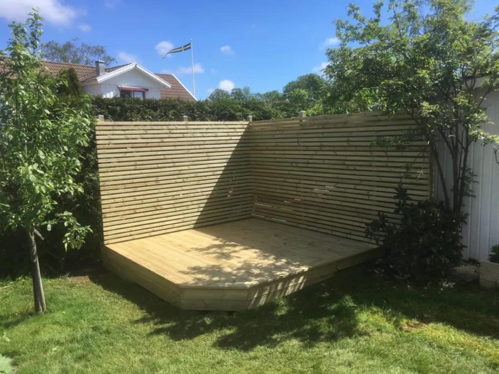
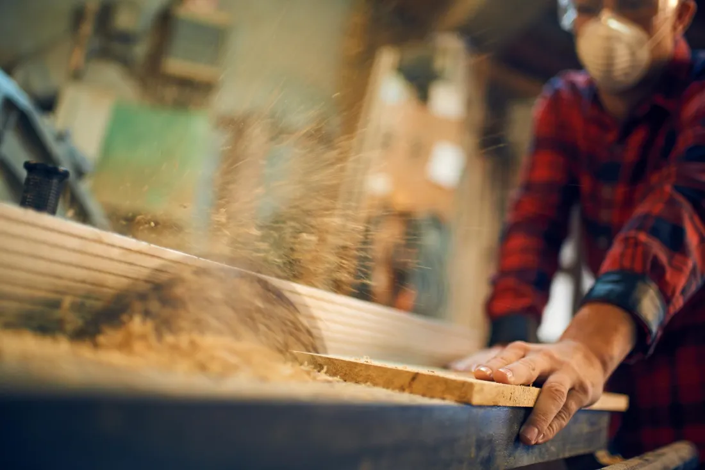
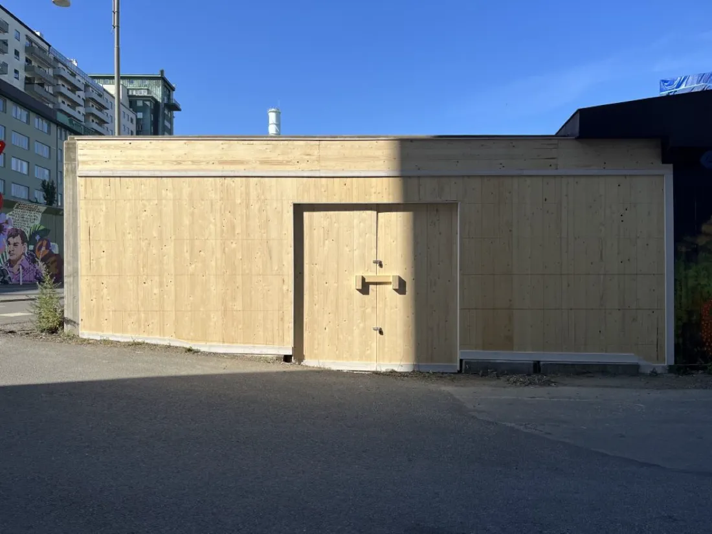

SNICKERI, BYGGSERVICE & MONTAGE
Vad vill du
få gjort?
Små uppdrag och större renoveringar. Utforska hur Snickare031 kan hjälpa dig.

Renovering & ombyggnad
För villan, lägenheten eller fritidshuset. Vi hjälper dig att förändra och förbättra.

Kök & montering
Köksmontering, köksrenovering och anpassningar som får vardagen att fungera bättre.

Badrumsrenovering
Hjälp med badrumsprojekt och kontakt med de yrkeskompetenser som behövs.

Snickeri & montage
Snickeriarbeten och montering för hem, föreningar och arbetsplatser.

Altaner & uteplatser
Altaner, insynsskydd och snickerier för livet utomhus.

Platsbyggt & finsnickeri
Fönsterbrädor, bokhyllor, garderober och förvaring anpassade efter platsen.

Fasad & tak
Hjälp med fasadprojekt samt tak- och plåtarbeten genom företagets samarbeten.

Fastighetsskötsel
Praktisk hjälp och mindre åtgärder för fastigheter, företag och bostadsrättsföreningar.